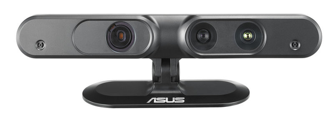
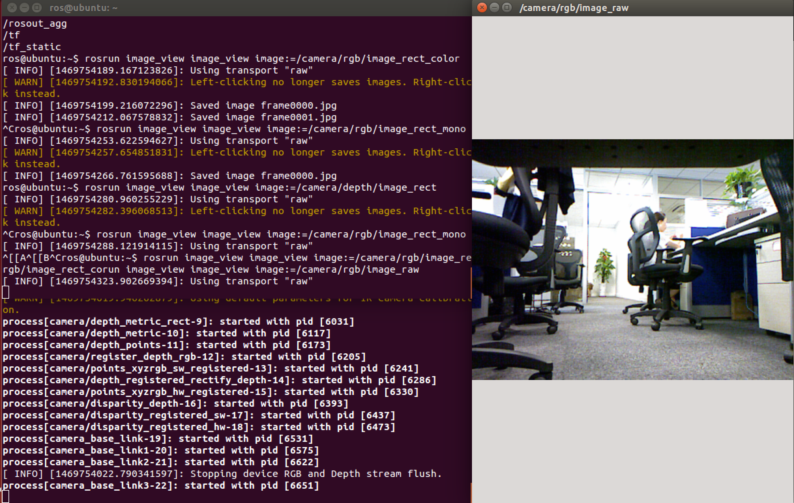
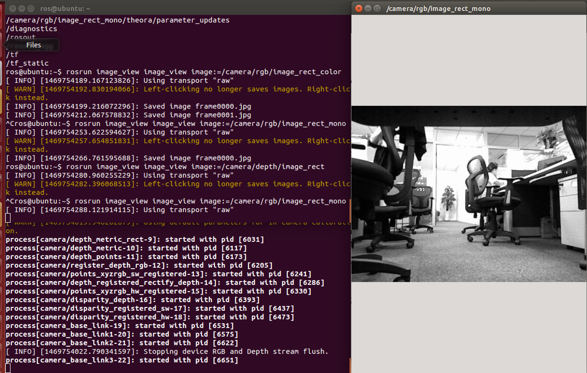
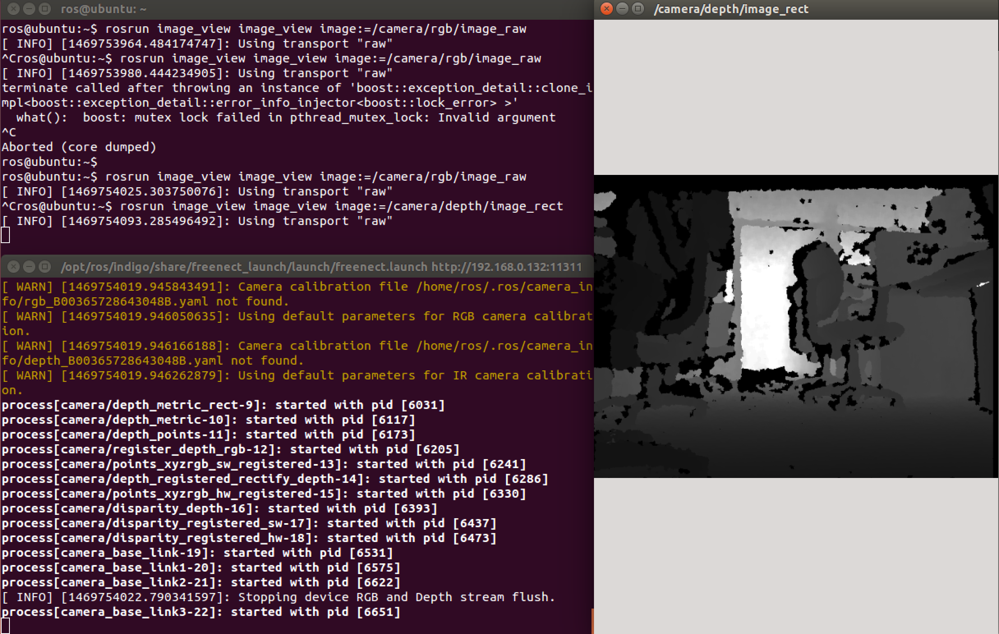

Setting-up 3D Sensor for the Turtlebot¶
In this tutorial you will learn how to configure your turtlebot robot to display image from 3D sensor, including Asus Xtion Pro Live camera and Kinect Camera. Prio to ROS Indigo, the Turtlebot ROS package provided a default support for Kinect camera. However, for ROS Indigo and later versions, Turtlebot package provides a default support for Asus Xtion Pro Live 3D sensor, and it requires some additional configuration to work with Kinect. In this tutorial, we will introduce how to set-up and test both sensors for ROS Indigo and later versions.
Warning
Make sure that you completed installing all the required packages in the previous tutorials, your network set-up is working fine between the ROS Master node and the host node.
Note
In this tutorial you will learn how to:
- Set-up, configure and test Asus Xtion Pro Live 3D sensor for a Turtlebot
- Set-up, configure and test Kinect Xbox 360 sensor for a Turtlebot
Asus Xtion Pro Live 3D Sensor¶
The default sensor that is used with ROS Indigo is the Asus Xtion Pro Live 3D sensor. The image below is for the Asus sensor.
If Asus is not your default 3Dsensor, then, to use this sensor with the turtlebot robot you will have to add the following lines in the .bashrc script file:
export TURTLEBOT_3D_SENSOR=asus_xtion_pro
Remember that if you work with ROS Indigo and later version, you do not need to make the above command, as it is the default 3D sensor, unless you already changed it to another setting.
Installing the Openni Package¶
If you are going to use the Asus sensor then you will need to install the openni package, so run the following command:
sudo apt-get install ros-indigo-openni-* ros-indigo-openni2-*
Both the packages will be installed in the same folder and you can find this file in the following path /opt/ros/indigo/share/openni2_camera and /opt/ros/indigo/share/openni_camera. You will find more oppeni folders which also belongs to the same package.
Note that this is the package that is responsible for running the 3D sensor. Prio to ROS Indigo, this ROS package was configured to start Kinect 3D sensor by default. However, for ROS Indigo and later versions, it was configured to run Asus Live Pro 3D sensor by defaut.
If you want to use Kinect 3D sensor with your Turtlebot on ROS Indigo and later version, refer to the next section Kinect 3D Sensor.
Note
For more details about openni on ROS, please refer to the following ROS documentation pages:
- openni_launch: Launch files to open an OpenNI device and load all nodelets to convert raw depth/RGB/IR streams to depth images, disparity images, and (registered) point clouds
- openni_camera: A ROS driver for OpenNI depth (+ RGB) cameras. These include: Microsoft Kinect, PrimeSense PSDK, ASUS Xtion Pro and Pro Live The driver publishes raw depth, RGB, and IR image streams.
- QuickStart Tutorial: This tutorial demonstrates how to open a Kinect (or other OpenNI device) in ROS, introduces ROS tools for visualization and configuration, and explains how to get registered (depth + RGB) outputs like color point clouds.
Explanning the 3dsensor.launch File¶
You will find the file by typing the following commands:
roscd turtlebot_bringup/launch/
sudo gedit 3dsensor.launch
The code is well explained but we will have a look at the following point in the code. In line number 21 :
<arg name="3d_sensor" default="$(env TURTLEBOT_3D_SENSOR)"/> <!-- kinect, asus_xtion_pro -->
The TURTLEBOT_3D_SENSOR environment variable is set in the previous steps in the .bashrc file according to your sensor type.
Note that the value of this variable will affect more setting parameters for the initialization of the 3D sensor afterwards in the same .launch file.
Testing the Asus Sensor¶
After all the installation steps you can test your environment by typing the following commands:
roslaunch turtlebot_bringup 3dsensor.launch
roslaunch turtlebot_rviz_launchers view_robot.launch
After launching the RViz simulator (rosrun rviz rviz) press on the Image icon on the left list and you would be able to see something like this:
You can also launch the image_view program to vizualize the video streams:
rosrun image_view image_view image:=/camera/rgb/image_raw
Kinect 3D Sensor¶
By default, ROS indigo supports Asus Live Pro 3D sensor and has no default support to Kinect 3D sensor.
If you use Asus Live Pro 3D sensor, then skip the Kinect configuration step below. If you use Kinect 3D sensor, then follow the steps below to configure correctly your Turtlebot robot with it.
The following image is for the Kinect 3D sensor:
Kinect 3D sensor configuration¶
In order to connect the Kinect sensor with the ROS Indigo environment, you can type the following three commands in your .bashrc file:
export TURTLEBOT_3D_SENSOR=kinect
Then save, exit and close the terminal. Open a new terminal.
Installing ROS OpenNI and OpenKinect Drivers¶
First, you need to download the ROS OpenNI and OpenKinect (freenect) drivers by running the following commands:
sudo apt-get install ros-indigo-openni-* ros-indigo-openni2-* \ ros-indigo-freenect-*
rospack profile
Now you can test your camera. Type the following command:
roslaunch freenect_launch freenect.launch
You should see these lines in the terminal:
process[camera/camera_nodelet_manager-1]: started with pid [18070]
[INFO] [1420555647.969035762]: Initializing nodelet with 4 worker
threads.
process[camera/driver-2]: started with pid [18078]
Warning: USB events thread - failed to set priority. This might cause
loss of data...
process[camera/rectify_color-3]: started with pid [18112]
process[camera/depth_rectify_depth-4]: started with pid [18126]
etc.
Note
Do not worry about the warning appearing in the terminal after running the previous command.
Note
For more details about openni on ROS, please refer to the following ROS documentation pages:
- libfreenect: freenect is a library for accessing the Microsoft Kinect USB camera.
- freenect_launch: This package contains launch files for using a Microsoft Kinect using the libfreenect library. This folder replicates the API offered by openni_launch in an effort to maintain maximum compatibility with the OpenNI driver.
- OpenKinect WiKi: This page documents how to get started using OpenKinect.
Testing Your 3D Sensor (Valid for Both Asus and Kinect)¶
After running the previous command, you can now run the following command to know all the topics published by the camera:
rostopic list
The following examples are to demonstrate the difference between a couple of topics:
- To test the RGB image from camera type the following command:
rosrun image_view image_view image:=/camera/rgb/image_rawYou will see something like this:

- To test the Mono image from camera type the following command:
rosrun image_view image_view image:=/camera/rgb/image_rect_monoYou will see something like this:

- To test the depth image from camera type the following command:
rosrun image_view image_view image:=/camera/depth/image_rectYou will see something like this:
Note
The darker the object is the closer it is to the turtlebot.